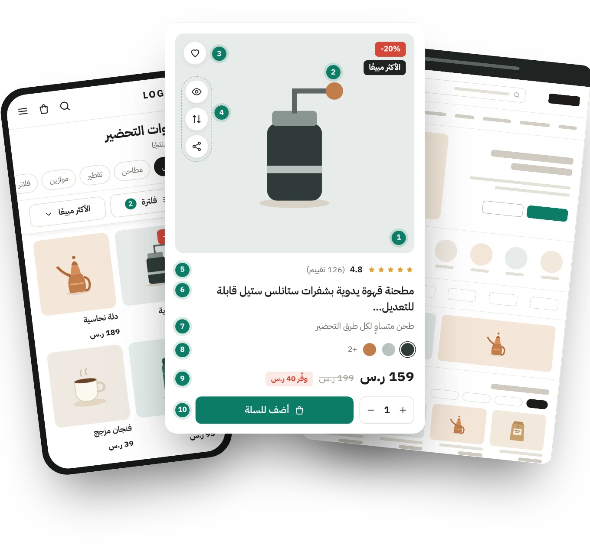
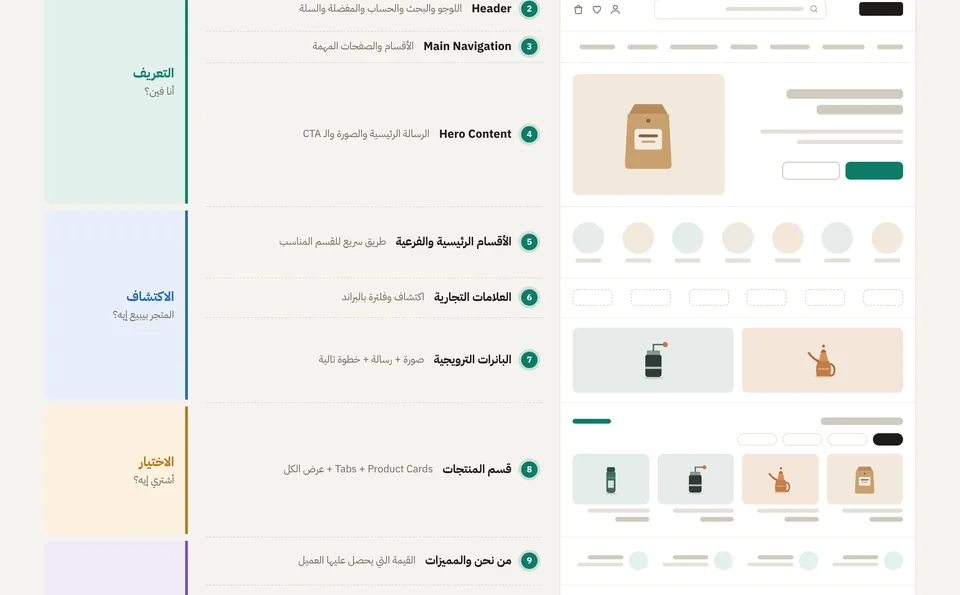
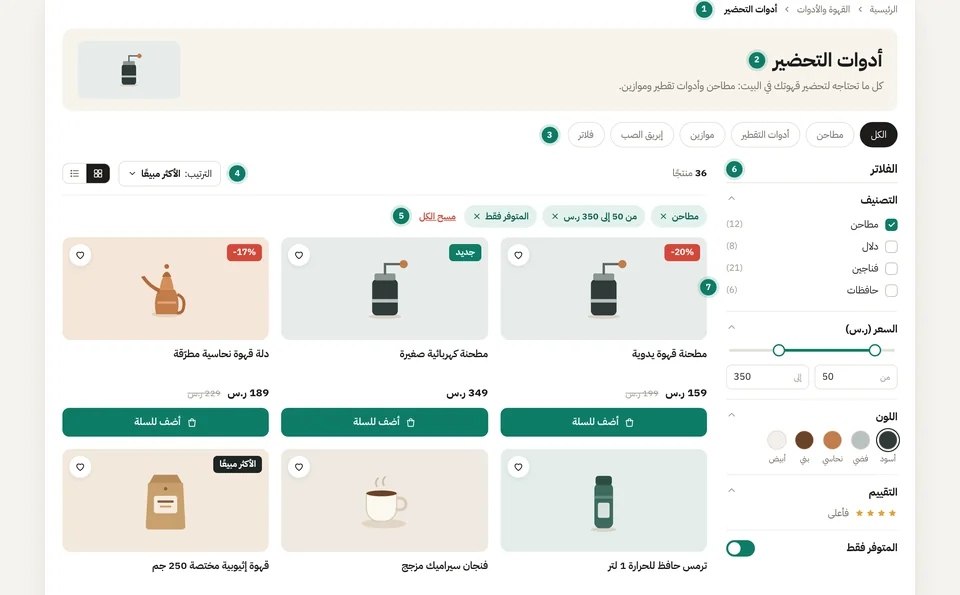
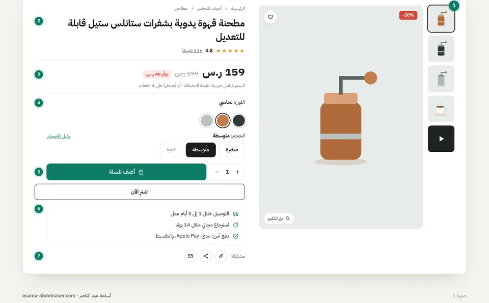
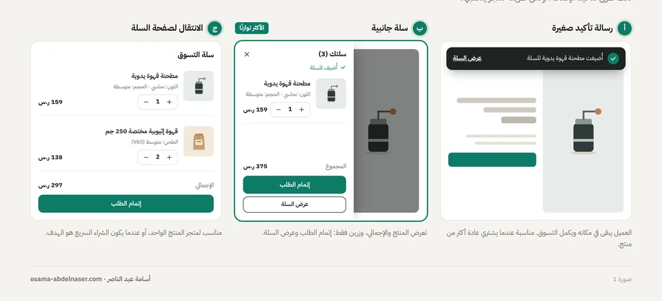
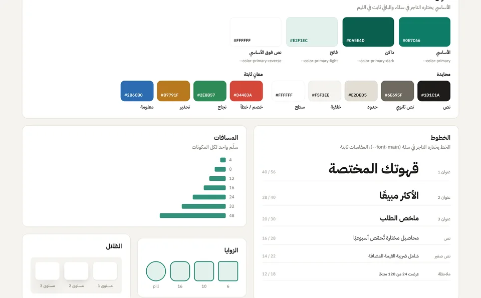

تصميم المتاجر الإلكترونية
على سلة وزد
من الصفحة الرئيسية حتى التسليم للمطور. خلاصة تصميم 23 ثيمًا لمتاجر سلة، و11 متجرًا حيًا لعلامات تجارية على سلة وزد وShopify، بلغة بسيطة وصور توضيحية مرسومة خصيصًا للشرح.

ابدأ بالأساس، افهم الـ UX، ثم ابنِ عليه بحرية.
المقالات

الصفحة الرئيسية
Hero، الأقسام، البانرات، الـ Product Card، أقسام الثقة، الفوتر، وحدود المنصة

صفحة قائمة المنتجات والفلترة
رأس القسم، الفلاتر، الترتيب، الشبكة، التنقل بين النتائج، والحالات الفارغة

صفحة المنتج
المعرض، السعر، الخيارات وحالاتها، زر الإضافة، الثقة، والموبايل

السلة وإتمام الطلب
السلة الجانبية، صفحة السلة، السلة الفارغة، صفحة تأكيد الطلب، وما يتحكم فيه الثيم

Design System والتسليم للمطور
Tokens، المكونات وحالاتها، إعدادات التاجر، ملف Figma، والتسليم
دراسة حالة
متجر حقيقي من الفكرة حتى الإطلاق، بالصور والشرح.
لمن هذه السلسلة؟
- للمصمم الذي يريد أن يبدأ في تصميم المتاجر الإلكترونية.
- للمصمم الذي يصمم بالفعل ويريد أن يفهم حدود سلة وزد.
- للتاجر أو المطور الذي يريد أن يفهم قرارات المصمم.
اقرأها على Notion
كل ملف فيه المقال بصيغة Markdown مع صوره. من Notion اختر Import ثم Text & Markdown.